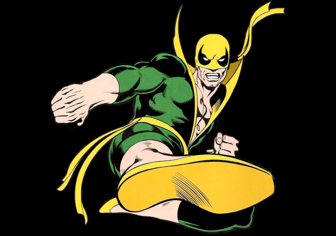

Writer: Roy Thomas
Illustrator: Gil Kane
First Appearence: Marvel Premiere 15 (May 1974)
Other Name: Daniel "Danny" Rand Kai
Publisher: Marvel Comics
Ability: Martial Arts and a mystical force known as the Iron Fist, which allows him to summon and focus his chi.
Titles: Marvel Premeire, Iron Fist, Power Man and Iron Fist, The Immortal Iron Fist
Biography
Danny Rand was born in New York City. His father, Wendell Rand, as a young boy happened upon the mystical city of K'un-L'un. During his time in K'un L'un, Wendell saved the life of the city's ruler, Lord Tuan, and was adopted as Tuan's son. However, Wendell eventually left K'un L'un and became a wealthy entrepreneur in the United States. He married socialite Heather Duncan and had a child: Daniel.
Wendell later organizes an expedition to again seek out K'un-L'un, taking his wife Heather, his business partner Harold Meachum and nine-year-old Danny. During the journey up the mountain, Danny slips off the path, his tie-rope taking his mother and father with him. Meachum, who also loves Heather, forces Wendell to plunge to his death but offers to rescue Heather and Danny. She rejects his help. Heather and Danny come across a makeshift bridge that appears out of nowhere and are attacked by a pack of wolves. Heather throws herself on the wolves to save Danny and is killed even as archers from K'un L'un attempt to save her. The archers take the grieving Danny to see Yü-Ti, the hooded ruler of K'un L'un. When Danny expresses his desire for vengeance, Yü-Ti apprentices him to Lei Kung, the Thunderer, who teaches him martial arts.
Danny proves to be the most gifted of Lei Kung's students. He toughens his fists by plunging them into buckets of sand, gravel, and rock. At 19, Danny is given the chance to attain the power of the Iron Fist by fighting and defeating the dragon Shou-Lao the Undying, who guards the molten heart that had been torn from its body. Guessing that the heart provides life energy to Shou-Lao through the dragon-shaped scar on its chest, Danny covers the scar with his own body and hangs on until Shou-Lao collapses and dies, in the process burning a dragon brand into his own chest. Having killed Shou-Lao, he enters its cave and plunges his fists into a brazier containing the creature's molten heart, emerging with the power of the Iron Fist. It is later revealed that Danny is part of a long lineage of Iron Fists. When K'un L'un reappears on Earth after 10 years, Danny leaves to find his father's killer. Returning to New York, Danny Rand, dressed in the ceremonial garb of the Iron Fist, seeks out Harold Meachum, now head of Meachum Industries. After overcoming a number of attempts on his life, he confronts Meachum in his office, only to find the man legless—an amputation carried out when, after abandoning Danny and his mother, he was caught in heavy snow and his legs became frostbitten.
Meachum accepts his fate and tells Iron Fist to kill him. Overcome with pity, Iron Fist walks away. At that moment Meachum is murdered by a mysterious ninja, and his daughter Joy blames Iron Fist for the death. Eventually, Iron Fist clears his name and begins a career as a superhero, aided by his friends Colleen Wing and Misty Knight, falling in love with the latter. Notable adversaries in his early career include Sabretooth, the mysterious Master Khan (whom the ninja that killed Meachum once served), and the Steel Serpent, the exiled son of Lei Kung, who coveted the Iron Fist power.
Marvel Premiere (1972-1981) 10 issues
Iron Fist (1975-197?) 19 issues
Power Man and Iron Fist (1978-1986) 76 issues
Iron Fist (1996-1996) 2 issues
Iron Fist(1998-1998) 3 issues
Iron Fist (2004-2004) 6 issues
Immortal Iron Fist (2007-2009) 27 issues
Power Man and Iron Fist (2011-2011) 5 issues
Iron Fist: The Living Weapon (2014-2015) 12 issues
Power Man and Iron Fist (2016-2017 15 issues
Iron Fist (2017-2017) 7 issues
Immortal Iron Fists (2017-2017) 6 issues
Iron Fist Wolverine (2000-2001) 4 issues
Immortal Iron Fist Annual 1(Nov 2007)
Immortal Iron Fist: Orson Randall and the Green Mist of Death 1 (April 2008)
Immortal Iron Fist: Orson Randall and the Death Queen of California 1 (Nov 2008)
Power Man and Oron Fist: Sweet Christmas Annual 1 (Feb 20917)